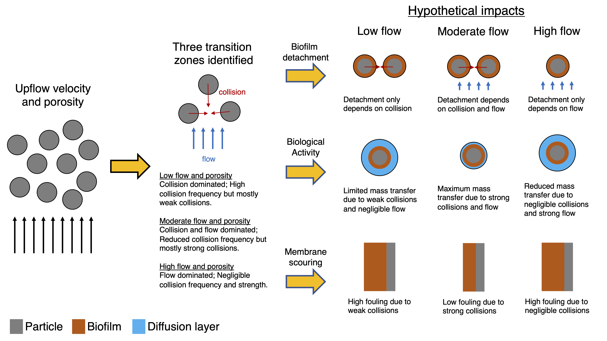
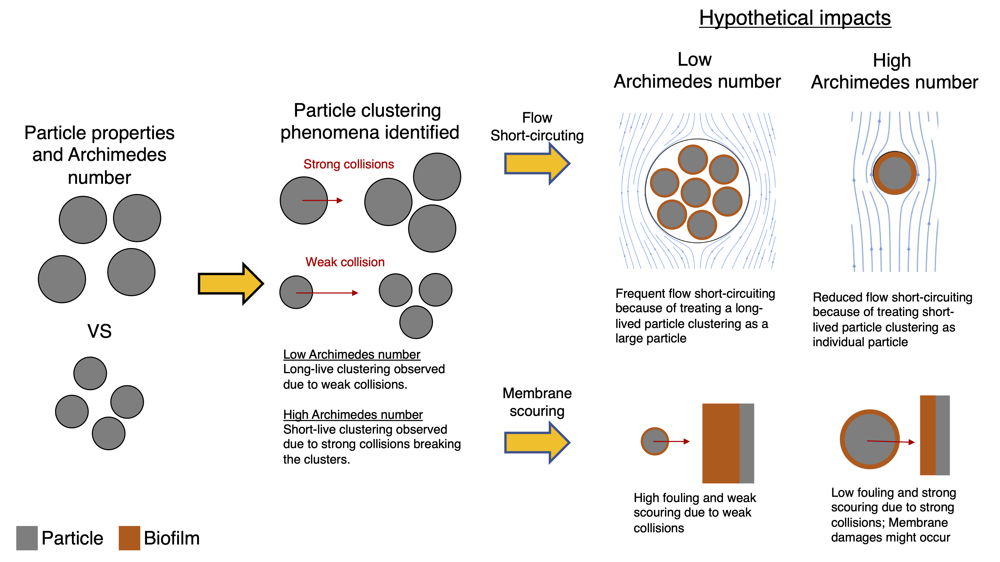

Energy-positive wastewater treatment systems
The Staged Anaerobic Fluidized-bed Membrane Bioreactor (SAF-MBR) is a promising technology for reducing the energy intensity of domestic wastewater treatment by using anaerobic microorganisms to convert organics into methane in the absence of aeration. However, the hydrodynamic processes related to flow-particle and particle-particle interactions induced by the moving particles in the SAF-MBR are poorly understood, which hinders its design and operational practices.
To address this issue, we have developed a collocated particle resolved simulation (PRS) using the immersed boundary method (IBM) to accurately quantify the fluid-particle and particle-particle interactions in a fluidized-bed reactor. Through our simulations, we have investigated the effect of particle Reynolds number and found that an intermediate particle Reynolds number regime exists where the combined effect of flow and collisions is optimal, maximizing both mixing in the AFBR and membrane scouring in the P-MBR.

We have also determined that the design of fluidized beds critically depends on the Archimedes number, which combines the effect of particle and fluid properties. Our simulation results show that particles with an Archimedes number greater than roughly 1000 should be used to avoid flow short-circuiting due to clusters in the AFBR and reduced membrane scouring due to ineffective collisions in the P-MBR.

Additionally, our simulations reveal that segregated layers of particles behave identically to their corresponding monodispersed fluidized bed layers, but the transition region between the two segregated layers cannot be described as a simple superposition of the two segregated layers. Overall, our findings provide valuable insights into the hydrodynamics of the SAF-MBR and can help improve its design and operation for more efficient and effective wastewater treatment.